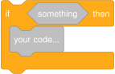
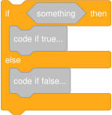
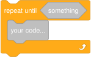
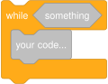

| SparkleJ Framework | Home | GitHub |
| SparkleJ Framework | Home | GitHub |
This page shows Java statements/expressions that use Sparkle API and do something similar to what a certain Scratch block would do. This can be useful for translating
your Scratch project into Sparkle! This can't be done automatically with a converter, since there are many design differences between Scratch and Sparkle. For example,
Sprites in Sparkle do not execute or even hold any kind of code, they're just renderable data. And multiple Stage instances can be created, did you know that?
This mapping was created for Sparkle version 0.1-beta. May change in the future!
In the following code snippets, replace sprite with your target Sprite instance, stage with your target Stage instance,
otherSprite with a different Sprite instance, and "spriteId" with the target Sprite's ID on the target Stage.
| Scratch block | Sparkle API equivalent | Notes |
Motion | ||
sprite.moveSteps(10); |
||
sprite.rotateRight(15); |
||
sprite.rotateLeft(15); |
||
double halfWidth = stage.getWidth() / 2d; |
||
sprite.copyPos(otherSprite); |
||
| No direct equivalent; working on that 😅 | ||
sprite.goTo(48, 36); |
||
double halfWidth = stage.getWidth() / 2d; |
||
sprite.glideTo(otherSprite, 1000); |
Second argument - 1000 - represents the count of milliseconds to glide for. 1000 ms = 1 sSparkle (and Java) use milliseconds/nanoseconds instead of seconds since the time amount must be a whole number, so, to allow more precision, the time unit itself should be smaller. |
|
| No direct equivalent yet | ||
sprite.goTo(48, 36, 1000); |
||
sprite.setDirection(90); |
||
| No direct equivalent yet | ||
sprite.pointTowards(otherSprite); |
||
sprite.setDirection(Constants.RANDOM.nextDouble(0, 360)); |
loading="lazy" although this option can't be selected in vanilla Scratch, it can be set using file editing or Scratch mods like TurboWarp, and is completely functional in vanilla Scratch. | |
sprite.changeX(10); |
||
sprite.setX(48); |
||
sprite.changeY(10); |
||
sprite.setY(36); |
||
sprite.bounce(); |
You're right, Sprite.bounce() does not check if the sprite is on edge. I don't really know how to check that with current API, sorry 😅 |
|
sprite.setRotationMode(RotationMode.LEFT_RIGHT); |
||
sprite.setRotationMode(RotationMode.NO_ROTATION); |
||
sprite.setRotationMode(RotationMode.ALL_AROUND); |
||
sprite.setRotationMode(RotationMode.UP_DOWN); |
This rotation mode comes from PenguinMod and is not available in Scratch. | |
sprite.setRotationMode(RotationMode.LOOK_AT); |
This rotation mode comes from PenguinMod and is not available in Scratch. | |
sprite.getX() |
Note the absence of semicolon - this is not a statement, it's an expression! | |
sprite.getY() |
||
sprite.getDirection() |
||
Looks | ||
sprite.sayFor("Hello!", 2000); |
The sprite will get a text bubble as a property, however, it will not be rendered, because text rendering is currently unsupported 😅 Also notice that Hello! is in quotation marks - this is how all strings should be enclosed in Java. |
|
sprite.say("Hello!"); |
||
sprite.thinkFor("Hmm...", 2000); |
||
sprite.think("Hmm..."); |
||
sprite.setCostume("costume1"); |
||
sprite.incrementCostume(); |
||
stage.setBackdrop("backdrop1"); |
Note that backdrop is a property of a Stage instance, not Sprite |
|
stage.setBackdrop("backdrop1", true); |
||
stage.incrementBackdrop(); |
||
sprite.changeSize(10); |
||
sprite.setSize(100); |
||
sprite.setStretchX(100); |
This block comes from Stretch TurboWarp extension and is not available in Scratch. | |
sprite.changeStretchX(10); |
This block comes from Stretch TurboWarp extension and is not available in Scratch. | |
sprite.setStretchX(100); |
This block comes from Stretch TurboWarp extension and is not available in Scratch. | |
sprite.setStretchY(100); |
This block comes from Stretch TurboWarp extension and is not available in Scratch. | |
sprite.changeStretchX(10); |
This block comes from Stretch TurboWarp extension and is not available in Scratch. | |
sprite.changeStretchY(10); |
This block comes from Stretch TurboWarp extension and is not available in Scratch. | |
sprite.getGraphicEffects().increment(GraphicEffect.HUE_SHIFT, 45); |
Unlike Scratch's "color" graphic effect, which is measured in some kinda weird unit (0 - 200), Sparkle's HUE_SHIFT graphic effect is measured in degrees (0 - 360), so we have to convert from Scratch's range to Sparkle's range: 25 * (360 / 200) = 45. |
|
sprite.getGraphicEffects().put(GraphicEffect.HUE_SHIFT, 0); |
||
sprite.getGraphicEffects().increment(GraphicEffect.BULGE, 25); |
BULGE effect doesn't work properly yet |
|
sprite.getGraphicEffects().put(GraphicEffect.BULGE, 0); |
||
sprite.getGraphicEffects().increment(GraphicEffect.WHIRL, 25); |
WHIRL effect doesn't work properly yet |
|
sprite.getGraphicEffects().put(GraphicEffect.WHIRL, 0); |
||
sprite.getGraphicEffects().increment(GraphicEffect.PIXELATION, 25); |
PIXELATION effect doesn't work properly yet |
|
sprite.getGraphicEffects().put(GraphicEffect.PIXELATION, 0); |
||
sprite.getGraphicEffects().increment(GraphicEffect.MOSAIC, 25); |
MOSAIC effect doesn't work properly yet |
|
sprite.getGraphicEffects().put(GraphicEffect.MOSAIC, 0); |
||
sprite.getGraphicEffects().increment(GraphicEffect.BRIGHTNESS, 25); |
||
sprite.getGraphicEffects().put(GraphicEffect.BRIGHTNESS, 0); |
||
sprite.getGraphicEffects().increment(GraphicEffect.FADE, 25); |
||
sprite.getGraphicEffects().put(GraphicEffect.FADE, 0); |
||
sprite.getGraphicEffects().clear(); |
||
sprite.setVisible(true); |
||
sprite.setVisible(false); |
||
stage.moveToFrontLayer(new SpriteID("spriteId", cloneId)); |
Sprites do not store their layer; it's a property of Stage. The clone ID is an int that identifies a sprite's clone. The main sprite's clone ID is always 0.
|
|
stage.moveToBackLayer(new SpriteID("spriteId", cloneId)); |
||
stage.moveByLayers(new SpriteID("spriteId", cloneId), 1); |
||
stage.moveByLayers(new SpriteID("spriteId", cloneId), -1); |
||
sprite.getCostumeIndex() |
||
sprite.getCostumeName() |
||
stage.getBackdropIndex() |
Once again, note that backdrops belong to a Stage instance. |
|
stage.getBackdropName() |
||
| No direct equivalent | In Sparkle, sprites' size isn't stored as a single property, size can be separate for X axis (X stretch) and Y axis (Y stretch). Querying size for sprites with different X and Y stretches doesn't really make sense. If you're sure these two properties are always equal, you can query either of them instead. | |
sprite.getStretchX() |
This block comes from Stretch TurboWarp extension and is not available in Scratch. | |
sprite.getStretchY() |
This block comes from Stretch TurboWarp extension and is not available in Scratch. | |
Sound | ||
sprite.startSound("meow", true); |
||
sprite.startSound("meow"); |
||
| No direct equivalent | This feature of Scratch isn't very convenient. It doesn't allow to choose which sounds to stop. You must collect IDs of sounds (return values of startSound(...) methods) to stop instead. |
|
sprite.getSoundEffects().increment(SoundEffect.PITCH, 10); |
||
sprite.getSoundEffects().increment(SoundEffect.PAN, 10); |
||
sprite.getSoundEffects().put(SoundEffect.PITCH, 100); |
||
sprite.getSoundEffects().put(SoundEffect.PAN, 100); |
||
sprite.getSoundEffects().decrement(SoundEffect.VOLUME, 10); |
VOLUME is a sound effect in Sparkle, not a separate property. |
|
sprite.getSoundEffects().put(SoundEffect.VOLUME, 100); |
||
sprite.getSoundEffects().clear(); |
This does affect volume since it's a sound effect. | |
sprite.getSoundEffects().getDouble(SoundEffect.VOLUME) |
||
Events | ||
Global.when(StartEvent.class, e -> { |
This is not the only way to register event handlers. See Global and EventDispatcher classes. |
|
Global.when(KeyboardEvent.KeyPressedEvent.class, e -> { |
||
Global.when(MouseEvent.MouseClickedEvent.class, e -> { |
||
Global.when(MouseEvent.MouseClickedEvent.class, e -> { |
||
Global.when(BackdropChangeEvent.After.class, e -> { |
||
| 10"/> | No direct equivalent | This functionality is planned for an extension module that allows microphone, camera, etc. access. It will not be available in the core module. |
| 10"/> | No direct equivalent | Sparkle does not start a timer automatically, unlike Scratch. You may do it with Stopwatch classes. |
Global.when(MessageEvent.class, e -> { |
||
Global.fire(new MessageEvent("message1")); |
||
Global.fireAndWait(new MessageEvent("message1")); |
||
Control | ||
WaitUtils.waitFor(1000); |
Remember - specify time in milliseconds! | |
for (int i = 0; i < 10; i++) { |
This is a standard Java feature 😄 | |
while (true) { |
Actual representation depends on the context. E.g. for starting game loops, TickEvent handler must be used instead. |
|
 |
if (something) { |
Replace something with your desired boolean expression. |
 |
if (something) { |
|
WaitUtils.waitUntil(() -> something); |
The () -> segment is to create a lambda. Basically, this is required to re-evaluate the specified expression constantly. If you omit that segment, the expression will be evaluated just once, and your program will freeze on this statement if the condition was false at that moment. |
|
WaitUtils.waitForOrUntil(() -> something, 1000); |
This block comes from PenguinMod and is not available in Scratch. | |
 |
while (!something) { |
The exclamation mark before the boolean expression negates it (true becomes false and vice versa). |
 |
while (something) { |
loading="lazy" although this block can't be found in vanilla Scratch, it can be added using file editing or Scratch mods like TurboWarp, and is completely functional in vanilla Scratch. |
Context-dependent; usually: stage.stop(); |
To stop the entire program (closes all windows!): System.exit(0);To stop a Stage instance: stage.stop(); |
|
Context-dependent; usually return; |
||
| No direct equivalent | Sprites in Sparkle do not store any code, and code suspension must be managed by the application, which means this block just doesn't make any sense in Sparkle. |
|
| No direct equivalent | Sprites in Sparkle do not store any code, and no event is fired upon clone creation. Instead, retrieve the clone Sprite instance upon
creation to customize it. |
|
int cloneId = stage.createClone("spriteId"); |
The clone sprite's initial layer will be the front one, unlike in Scratch, where it gets the back one. | |
stage.deleteAllClones("spriteId"); |
This block comes from PenguinMod and is not available in Scratch. | |
stage.deleteClone("spriteId", cloneId); |
||
cloneId != 0 |
This block comes from PenguinMod and is not available in Scratch. | |
Sensing | ||
| No direct equivalent yet | ||
| Too complex | This is possible to query in Sparkle, but it's too much boilerplate for this list. Working on that! | |
| Too complex | ||
| Not possible yet | Can't read color data from surface 😭 | |
| Not possible yet | ||
| No direct equivalent yet | ||
Math.hypot(sprite.getX() - otherSprite.getX(), sprite.getY() - otherSprite.getY()) |
||
| No direct equivalent | This functionality is planned for an extension module that adds UI elements. It will not be available in the core module. | |
| No direct equivalent | ||
| No direct equivalent yet | ||
| No direct equivalent yet | ||
| No direct equivalent yet | ||
| No direct equivalent yet | ||
| No direct equivalent | Scratch's dragging doesn't allow customization of how the sprite must move towards the cursor, and most applications don't need dragging anyway. This feature must be implemented by the application if needed. | |
| No direct equivalent | This functionality is planned for an extension module that allows microphone, camera, etc. access. It will not be available in the core module. | |
| No direct equivalent | Sparkle does not start a timer automatically, unlike Scratch. You may do it with Stopwatch classes. |
|
stage.getBackdropIndex() |
||
stage.getBackdropName() |
||
100 |
Stage doesn't have sound effects (at least for now) | |
stage.getVariable("my variable").getValue() |
You might want to use a method other than getValue() to get the variable's value, if it's a primitive variable |
|
sprite.getX() |
||
sprite.getY() |
||
sprite.getDirection() |
||
sprite.getCostumeIndex() |
||
sprite.getCostumeName() |
||
| No direct equivalent | ||
sprite.getSoundEffects().getDouble(SoundEffect.VOLUME) |
||
sprite.getVariable("private variable").getValue() |
You might want to use a method other than getValue() to get the variable's value, if it's a primitive variable |
|
LocalDate.now().getYear() |
The provided examples of querying time might not be the best options in your case. See the java.time package. |
|
LocalDate.now().getMonthValue() |
||
LocalDate.now().getDayOfMonth() |
||
Math.floorMod(LocalDate.now().toEpochDay() + 5, 7) |
||
LocalTime.now().getHour() |
||
LocalTime.now().getMinute() |
||
LocalTime.now().getSecond() |
||
Duration.between(LocalDateTime.of(2000, 1, 1, 0, 0), LocalDateTime.now()).toNanos() / 86400000000000d |
This block is often used to calculate a certain duration in Scratch. In Java, however, it's recommended to use the Duration class to measure durations without other (unnecessary) calculations. You can still use this code if you want a numeric value from the start, though. |
|
| No direct equivalent | Sparkle is not an account system in any way, it's just a framework for graphical apps. This wouldn't make sense in the core. Applications must implement this functionlity themselves if needed. | |
Operators | ||
expr1 + expr2 |
expr1 and expr2 are numeric expressions |
|
expr1 - expr2 |
||
expr1 * expr2 |
||
(double) expr1 / expr2 |
Casting to double ensures mathematical division if both expressions are integer. Remove the cast if you want integer division |
|
Constants.RANDOM.nextDouble(expr1, expr2) |
||
expr1 > expr2 |
||
expr1 < expr2 |
||
expr1 == expr2 |
Here, expr1 and expr2 don't have to be numeric, they just must be of compatible types. Use equals() for object expressions if you want to compare their values. |
|
expr1 && expr2 |
expr1 and expr2 must be boolean expressions |
|
expr1 || expr2 |
||
!expr |
expr must be a boolean expression |
|
String.valueOf(expr1) + String.valueOf(expr2) |
Here, expr1 and expr2 can be expressions of any type (except void ofc) |
|
String.valueOf(expr2).charAt(expr1) |
expr1 must be an integer expression, expr2 can be an expression of any type |
|
String.valueOf(expr).length() |
expr can be an expression of any type |
|
String.valueOf(expr1).contains(String.valueOf(expr2)) |
expr1 and expr2 can be expressions of any type |
|
expr1 % expr2 |
expr1 and expr2 must be numerical expressions |
|
Math.round(expr) |
expr must be a numerical expression |
|
Math.abs(expr) |
expr must be a numerical expression |
|
Math.floor(expr) |
||
Math.ceil(expr) |
||
Math.sqrt(expr) |
||
Math.sin(expr) |
||
Math.cos(expr) |
||
Math.tan(expr) |
||
Math.asin(expr) |
||
Math.acos(expr) |
||
Math.atan(expr) |
||
Math.log(expr) |
||
Math.log10(expr) |
||
Math.exp(expr) |
||
Math.pow(10, expr) |
||
Variables | ||
Call | ||
See classes in | ||
target.getVariable("my variable").getValue() |
You might want to use a method other than getValue() to get the variable's value, if it's a primitive variable |
|
target.getVariable("my variable").setValue(expr); |
expr must be the same type as the variableYou might want to use a method other than setValue() to set the variable's value, if it's a primitive variable |
|
Variable<Type> v = target.getVariable("my variable"); |
Only works for numeric variables. Replace Type with the variable's actual type. |
|
| No direct equivalent | This functionality is planned for an extension module that adds UI elements. It will not be available in the core module. | |
| No direct equivalent | ||
Lists | ||
Common first statement: List<Type> list = target.<List<Type>>getVariable("my list").getValue();, where Type is the type of elements in the list | ||
list.add(expr); |
expr must be of type of elements in the list |
|
list.remove(0); |
Unlike in Scratch, indexes start from 0, not 1. |
|
list.clear(); |
||
list.add(0, expr); |
||
list.set(0, expr); |
||
list.get(0) |
||
list.indexOf(expr) |
||
list.size() |
||
list.contains(expr) |
||
| No direct equivalent | This functionality is planned for an extension module that adds UI elements. It will not be available in the core module. | |
| No direct equivalent | ||
My Blocks | ||
Java has a similar functionality - methods. | ||
| Run without screen refresh | GraphicsUtils.runWithoutStageRedraw(stage, () -> |
This is very useful in certain cases in Scratch, and it's a bit weird that it's only available in custom blocks. That's why it can be done anywhere in Sparkle. |